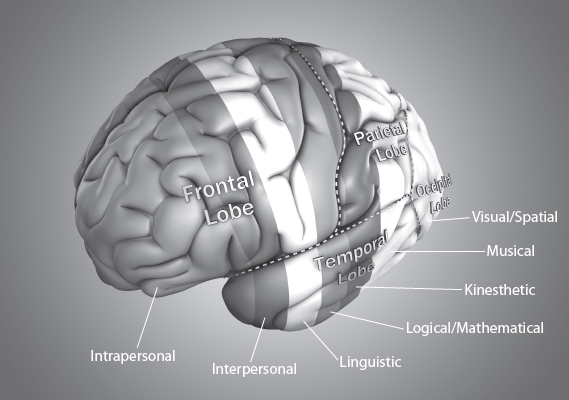

5
Entering into Directed Rest
Main Scripture: Be still, and know that I am God. Psalm 46:10
Linked Science Concept: When we direct our rest by introspection, self-reflection, and prayer; when we catch our thoughts; when we memorize and quote Scripture; and when we develop our mind intellectually, we enhance the default mode network (DMN) that improves brain function and mental, physical, and spiritual health.
God’s order is clearly reflected in the organization of the brain. God has designed the brain to work in a series of coordinated networks. The scientific expression for this is integrative functional organization, which basically means that all parts of the brain are connected, work together, and impact each other.
God has also designed the brain in such a way that the intrinsic activity in the nonconscious part of our minds is where most of the mind-action takes place, and it is always dominant, twenty-four hours a day. It is where we are thinking, choosing, building, and sorting thoughts. Simply put, it is the constant, high-energy activity that is always going on in the nonconscious mind, even when we are resting. What we consciously think and what we say and do is all driven by the information and activity in the nonconscious mind. So the nonconscious mind has the roots of all our words and actions, and we choose with our minds what these roots will be.
This organizational structure of the brain and body is described in Ephesians 4:16: “He makes the whole body fit together perfectly. As each part does its own special work, it helps the other parts grow, so that the whole body is healthy and growing and full of love” (NLT).
The constant, high-intrinsic activity in the brain that influences our words and actions can be seen in the Scriptures: “As he thinks in his heart, so is he” (Prov. 23:7).
What research shows is that when we go into a directed rest—a focused, introspective state—we enhance and increase the effectiveness of the activity in the nonconscious. Research shows that there is a greater increase in gamma waves, which are involved in attention, memory building, and learning, and more activity linked to positive emotions like happiness when we move into this directed rest state. PET scans and EEG recordings show portions of the brain bulk up that produce happiness and peace.[1] This is wisdom from Psalm 46:10: “Be still, and know that I am God.”
The Organized Networks in the Brain
Let’s take a closer look at these coordinated and organized networks in our brains that work together in a busy, integrated, and balanced way, helping our brains maintain a high level of activity 24/7. These networks form the brain’s inner life with the default mode network (DMN) dominating and becoming especially active when the mind is introspective and thinking deeply in a directed rest or idling state.
The DMN acts much like the conductor of an orchestra giving timing signals and coordinating activity among the different brain networks and regions and getting the brain ready to react on a conscious level. For example, the DMN coordinates the activity in
When your mind is busy with intrinsic activity (which is basically directed rest) such as introspection and thinking things through, letting your mind wander, sleeping, deep thinking, even under anesthetic, there is a constant chatter between the networks of the brain in the nonconscious mind. The energy consumed by this constantly active messaging and thought building in the nonconscious level of our mind is about twenty times more than when we are conscious. When we move into an alert conscious state, the energy consumption in the brain increases by 5 percent. In fact, 60 to 80 percent of all energy used by the brain occurs in circuits inside the brain that are unrelated to any external signal. This is all predominant DMN activity.[2]
Flexibility
An important property of these brain networks is called anti-correlation, which means we switch back and forth between the various networks.[3] For example, when we have flexible and creative thinking, we are able to shift between thoughts and capture and control thoughts. This is good and is what we want.
We need this flexibility as we go through life. We cannot control the events and circumstances of life, but we can control our reactions to those events and circumstances. Controlling our reactions requires flexibility in our thinking, and God has given us that with our multiple, different networks. God has designed our brain to work for us and not to control us.
Switch Off to Switch On
What I find fascinating is that when we shift into the default mode network (DMN), we don’t switch off to rest. Quite the contrary, we switch off to switch on to a mode of thinking that gives us perspective and wisdom and the opportunity to connect with God. This is a state of mind in which we switch off to the external and switch on to the internal.
In this deeply intellectual state, involved networks remain active, and the shifting between them remains active, but it is a different kind of activity. It is more focused and introspective. So when our brain enters the rest circuit, we don’t actually rest; we move into a highly intelligent, self-reflective, directed state. And the more often we go there, the more we get in touch with the deep, spiritual part of who we are. I believe God has created this state to directly connect us to him and to develop and practice an awareness of his presence. As the Scripture says, “Keep awake (give strict attention, be cautious and active) and watch and pray, that you may not come into temptation. The spirit indeed is willing, but the flesh is weak” (Matt. 26:41 AMP).
The DMN is a primary network that we switch into when we switch off from the outside world and move into a state of focused mindfulness. It activates to even higher levels when a person is daydreaming, introspecting, or letting his or her mind wander in an organized exploratory way through the endless myriad of thoughts within the mind. It’s a directed, deeply intellectual focusing inward and tuning out the outside world. It is a cessation from active external, which is like the Sabbath when we switch off from the world and focus on God.
In this directed rest state, you focus inward, you introspect, and you appear to slow down; but actually, your mental resources speed up and your thinking moves onto a higher level. When you think in this way, when you pause your activity and enter into a directed rest, you will emerge far ahead of where you would have been if you just operated within the realms of a shifting, shuffling, limited conscious, cognitive mind. This is the state of being still and knowing that he is God (Ps. 46:10).
The DMN, which used to be thought of as dark energy in the brain, is activated into ever-higher states when we engage in self-referential activity. Brain imaging experiments show that there is a persistent level of background activity when a person is in a state of directed rest.[4] This includes recollections, ruminations, imaginations, and self-perceptions; and it involves the ability to focus on a specific memory, thinking through things from different angles while still being solution focused. It is very important in planning future actions.[5]
In fact, miswiring of brain regions involved in the DMN, leading to all kinds of ups and downs in the DMN, may even be part of disorders ranging from Alzheimer’s to schizophrenia to other neuropsychiatric disorders. Research is starting to show that, for example, brain areas that atrophy and die in Alzheimer’s overlap with major centers of the DMN. Patients with depression show decreased connectivity between certain regions of the DMN and the emotional areas of the brain. And in schizophrenia, many areas of the DMN showed increased activity levels.[6]
Regular meditators—by this I mean those who have adopted a disciplined and focused, reflecting thought life in which they bring all thoughts into captivity—show that their DMN is more active and that there is more switching back and forth between networks.[7] This means the brain is more active, growing more branches and integrating and linking thoughts, which translates as increased intelligence and wisdom and that wonderful feeling of peace. God also throws in some additional benefits such as increased immune and cardiovascular health.
When we pray, when we catch our thoughts, when we memorize and quote Scripture, we move into this deep meditative state. This great state of mind is also activated when we intellectualize deeply about information—perhaps what we are studying or a skill we are developing in our job. We are highly intellectual beings created to have relationship with a highly intellectual God. We should never underestimate how brilliant we are and that we are only limited by how we see ourselves.
In His Great Mercy
In his great mercy, God has wired into the design of our brain these circuits that are spearheaded by the default mode network (DMN) we need to regularly access to keep connected to our spirits and to be able to follow the leading of the Holy Spirit—a time of ceasing from our own activity, ceasing from our own efforts (Heb. 4:9–10). Our minds need time to understand what our spirits already know.
In the busyness of life and the flurry of everyday activity, we expose ourselves to the possibility of developing a chaotic mindset with the net result of neurochemical and electromagnetic chaos in the brain. This feels like endless loops and spirals of thinking that can easily get out of control. When we activate the DMN, however, it is almost like a Sabbath in the brain, which is a cessation from the conscious flurry of work and a withdrawal into the depths of our mind. It is like a mental rebooting process to reconnect with who we are and with our Savior to bring perspective to the issues of life.
The Sabbath in the Brain
In fact, when we don’t frequently slow down and enter this rest state, this Sabbath in the brain, we disrupt natural functions in the brain. Research shows that when we don’t engage in this disciplined and focused self-reflective pattern of thinking that activates the DMN, we may experience negative self-esteem, depression, worry, anxiety, and health issues, and over-focus on generalized and short-term memory issues. We may get stuck, unable to cope, and have a tendency to focus on the problem and not the solution. In fact, as things go wrong in the processing of information in the default mode network, the mishandled data is passed on to other networks in the brain where it creates additional problems.[8] These additional problems can be experienced as memory issues, cloudy and fuzzy thinking, anxiety, depression, and many other manifestations including neuropsychiatric disorders.
The Task Positive Network
In line with the amazing order and balance God created in everything, we find this default mode resting network is balanced by the task positive network (TPN). The TPN supports the active thinking required for making decisions.[9] So as we focus our thinking and activate the DMN, at some point in our thinking process we move into active decision-making. This activates the TPN, and we experience this as action. In my 21-Day Brain Detox Plan (discussed in part 2), I call this action an active reach. Brain research—specifically the science of thought[10]—shows that action completes the cycle of building up and breaking down thoughts. We see this in the Scriptures as well: “Faith without works is dead” (James 2:26).
What is very interesting, and sobering, however, is how our DMN and TPN networks, as well as the balance between the two, are thrown off when we choose to be toxic. Toxic negative thinking produces increased activity in the DMN, and activity in the TPN decreases. This results in maladaptive, depressive ruminations and a decrease in the ability to solve problems. This makes us feel foggy, confused, negative, and depressed.
God is a God of order and balance, and he has fashioned our spirit, soul, and body this way. So it is quite simple; when we don’t follow his ordinances, there will be consequences. The brain moves into an unbalanced state, producing neurochemical and electromagnetic chaos. “For where you have envy and selfish ambition, there you find disorder and every evil practice” (James 3:16 NIV).
Our Brain Follows Our Mind
Studies using imaging techniques show that the DMN activates abnormally in individuals with depression.[11] Other studies show that in depressed individuals, the front middle part of the brain (anterior medial cortex) has increased activity.[12] This means that although their ruminations increased, this good sign was thrown into disarray by decreased activity in the middle-back part of the brain (the posterior medial cortex). When there is decreased activity in the posterior medial cortex, a pattern of dissociation occurs and there is a tendency to move away from being clear and specific in thinking about memories toward focusing on overly general memories.[13]
What this means is that when rumination turns into unproductive brooding and negative issues are blown out of proportion, it is detrimental to the brain and to good life choices. When this happens, healthy focused introspection activating the DMN turns from a coping-and-solution focus to a passive-and-maladaptive focus, which can result in worrying, anxiety, and depression.
This gives us scientific proof that we need to have the mindset expressed in Philippians 4:8: “Finally, brothers and sisters, whatever is true, whatever is noble, whatever is right, whatever is pure, whatever is lovely, whatever is admirable—if anything is excellent or praiseworthy—think about such things” (NIV). By following this perfect advice from God’s Word, you can bring back the balance between the default mode network (DMN) and the task positive network (TPN).
The Seven Different Types of Thinking

The good news is that this balance can be restored very quickly when you choose to become introspective and ruminate in a positive, directed way.[14] The speed of the change in how you feel and function is not just because of the balance being restored between the DMN and TPN, but also because the brain functions in complex circuits that encompass multiple brain structures and regions, so there is a positive, cascading effect throughout the brain. This is, once again, God’s grace in action.
Consequences of Toxic Thinking
Throughout this book, the resounding message is that negative thinking creates atypical responses in the brain, which will result in atypical manifestations. Studies have clearly demonstrated that people with a history of various types of depression exhibit differences in the regions and circuits of the brain associated with knowledge of socially acceptable behavior (anterior temporal lobe) and the awareness of wrong (subgenual region of the brain).[15]
Their thoughts and the choices they have made changed their brain in a negative way so that instead of being convicted of wrong in order to change—which is positive—they felt guilty and condemned, causing the positive to become negative.[16]
Other studies dealing with obsessive compulsive disorders[17] and schizophrenia[18] show definite changes in the brain from the negative to the positive when thinking is brought under control. Some scientists even describe these neuropsychiatric manifestations almost as though negative, toxic thinking opens a gate that allows negative emotions to overwhelm them. And because mind changes matter, this negative thinking changes the brain structure.
Patients with schizophrenia have decreased activity between their thalamus and prefrontal cortex, which affects memory and behavioral flexibility. They also have incorrect activity in their decision-making and emotional areas of the brain. From studies of adolescents starting to show symptoms of schizophrenia, it appears the areas are overactive at first from toxic stress reactions and then become damaged and hypoactive. So if we don’t help our children and adolescents manage stress, we are potentially causing brain damage, which in turn leads to more serious problems.[19]
Other research shows that women who have suffered abuse were 60 percent more likely to have a child with autism. The researchers propose that the long-lasting effects of abuse on women’s biological systems, such as the immune system and stress-response system, are responsible for increasing their likelihood of having a child with autism.[20] These women were victims of toxic thinking and the stress it causes—and the abuse will therefore impact the next generation as well, and potentially the next three. This is why there are often family histories of autism. I tell you this study to highlight the responsibility we have in not only getting our own minds right but also helping others, especially victims of trauma, get their minds right.
Switch On Your Brain
Choosing to be focused and mindful and to activate your DMN and your TPN in a balanced way by capturing your thoughts will bring you back in alignment with God.
In my 21-Day Brain Detox Plan, I show you how to center your attention on a single element, using my Switch On Your Brain 5-Step Learning Process. When there is a pause in your activity, a quiet state, that is a perfect time to connect to the spiritual part of who you are. In this state your mind can begin to understand what your spirit knows. You can position yourself to let the Holy Spirit deposit truth and direction in your spirit as you “trust in the LORD with all your heart, and lean not on your own understanding; in all your ways acknowledge Him, and He shall direct your paths” (Prov. 3:5–6).
Through modifying our practices of thought toward a more disciplined, focused, and reflective thought life, we can build up healthy neural real estate that is better able to bring our thoughts into captivity and deal with the variegated demands of today’s modern world. Your mind can powerfully and unexpectedly change your brain in positive ways when you intentionally direct your attention. The most efficient way to improve your brain is a daily step-by-step process—a lifestyle of thinking your brain into better functioning so that it turns into whatever you expect it to be: “As he thinks in his heart, so is he” (Prov. 23:7).
Your mind, intellect, will, and emotions are always changing your brain in some way. Directed, disciplined, and focused attention on the correct things is a major key to switching on your brain.
Chapter 5 Summary